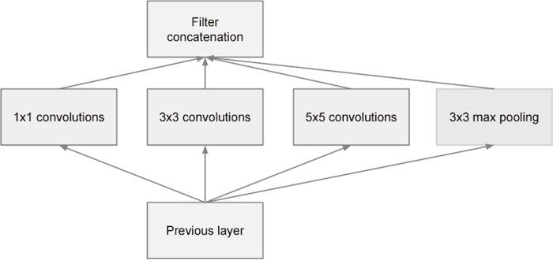
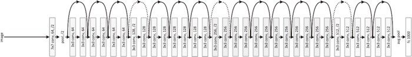

VGG 在 2014 年的比赛中最终获得了第 2 名的成绩（下一节介绍的 GoogleNet 是 2014 年的第 1 名）。虽然在性能上不及 GoogleNet，但因为 VGG 结构简单，应用性强，所以很多技术人员都喜欢使用基于 VGG 的网络。
VGG 在 2014 年的比赛中最终获得了第 2 名的成绩（下一节介绍的 GoogleNet 是 2014 年的第 1 名）。虽然在性能上不及 GoogleNet，但因为 VGG 结构简单，应用性强，所以很多技术人员都喜欢使用基于 VGG 的网络。
一般认为，现在深度学习之所以受到大量关注，其契机是 2012 年举办的大规模图像识别大赛 ILSVRC（ImageNet Large Scale Visual Recognition Challenge）。在那年的比赛中，基于深度学习的方法（通称 AlexNet）以压倒性的优势胜出，彻底颠覆了以往的图像识别方法。2012 年深度学习的这场逆袭成为一个转折点，在之后的比赛中，深度学习一直活跃在舞台中央。本节我们以 ILSVRC 这个大规模图像识别比赛为轴，看一下深度学习最近的发展趋势。
ImageNet[25] 是拥有超过 100 万张图像的数据集。如图 8-7 所示，它包含了各种各样的图像，并且每张图像都被关联了标签（类别名）。每年都会举办使用这个巨大数据集的 ILSVRC 图像识别大赛。
图 8-7 大规模数据集 ImageNet 的数据例（引用自文献 [25]）
ILSVRC 大赛有多个测试项目，其中之一是“类别分类”（classification），在该项目中，会进行 1000 个类别的分类，比试识别精度。我们来看一下最近几年的 ILSVRC 大赛的类别分类项目的结果。图 8-8 中展示了从 2010 年到 2015 年的优胜队伍的成绩。这里，将前 5 类中出现正确解的情况视为“正确”，此时的错误识别率用柱形图来表示。
图 8-8 中需要注意的是，以 2012 年为界，之后基于深度学习的方法一直居于首位。实际上，我们发现 2012 年的 AlexNet 大幅降低了错误识别率。并且，此后基于深度学习的方法不断在提升识别精度。特别是 2015 年的 ResNet（一个超过 150 层的深度网络）将错误识别率降低到了 3.5%。据说这个结果甚至超过了普通人的识别能力。
图 8-8 ILSCRV 优胜队伍的成绩演变：竖轴是错误识别率，横轴是年份。横轴的括号内是队伍名或者方法名
这些年深度学习取得了不斐的成绩，其中 VGG、GoogLeNet、ResNet 已广为人知，在与深度学习有关的各种场合都会遇到这些网络。下面我们就来简单地介绍一下这 3 个有名的网络。
VGG 是由卷积层和池化层构成的基础的 CNN。不过，如图 8-9 所示，它的特点在于将有权重的层（卷积层或者全连接层）叠加至 16 层（或者 19 层），具备了深度（根据层的深度，有时也称为“VGG16”或“VGG19”）。
VGG 中需要注意的地方是，基于 3×3 的小型滤波器的卷积层的运算是连续进行的。如图 8-9 所示，重复进行“卷积层重叠 2 次到 4 次，再通过池化层将大小减半”的处理，最后经由全连接层输出结果。
图 8-9 VGG（根据文献 [22] 生成）
GoogLeNet 的网络结构如图 8-10 所示。图中的矩形表示卷积层、池化层等。
图 8-10 GoogLeNet（引用自文献 [23]）
只看图的话，这似乎是一个看上去非常复杂的网络结构，但实际上它基本上和之前介绍的 CNN 结构相同。不过，GoogLeNet 的特征是，网络不仅在纵向上有深度，在横向上也有深度（广度）。
GoogLeNet 在横向上有“宽度”，这称为“Inception 结构”，以图 8-11 所示的结构为基础。
如图 8-11 所示，Inception 结构使用了多个大小不同的滤波器（和池化），最后再合并它们的结果。GoogLeNet 的特征就是将这个 Inception 结构用作一个构件（构成元素）。此外，在 GoogLeNet 中，很多地方都使用了大小为 1 × 1 的滤波器的卷积层。这个 1 × 1 的卷积运算通过在通道方向上减小大小，有助于减少参数和实现高速化处理（具体请参考原始论文 [23]）。

图 8-11 GoogLeNet 的 Inception 结构（引用自文献 [23]）
ResNet[24] 是微软团队开发的网络。它的特征在于具有比以前的网络更深的结构。
我们已经知道加深层对于提升性能很重要。但是，在深度学习中，过度加深层的话，很多情况下学习将不能顺利进行，导致最终性能不佳。ResNet 中，为了解决这类问题，导入了“快捷结构”（也称为“捷径”或“小路”）。导入这个快捷结构后，就可以随着层的加深而不断提高性能了（当然，层的加深也是有限度的）。
如图 8-12 所示，快捷结构横跨（跳过）了输入数据的卷积层，将输入 x 合计到输出。
图 8-12 中，在连续 2 层的卷积层中，将输入 x 跳着连接至 2 层后的输出。这里的重点是，通过快捷结构，原来的 2 层卷积层的输出 变成了 。通过引入这种快捷结构，即使加深层，也能高效地学习。这是因为，通过快捷结构，反向传播时信号可以无衰减地传递。
图 8-12 ResNet 的构成要素（引用自文献 [24]）：这里的“weight layer”是指卷积层
ResNet 以前面介绍过的 VGG 网络为基础，引入快捷结构以加深层，其结果如图 8-13 所示。

图 8-13 ResNet（引用自文献 [24]）：方块对应 3×3 的卷积层，其特征在于引入了横跨层的快捷结构
如图 8-13 所示，ResNet 通过以 2 个卷积层为间隔跳跃式地连接来加深层。另外，根据实验的结果，即便加深到 150 层以上，识别精度也会持续提高。并且，在 ILSVRC 大赛中，ResNet 的错误识别率为 3.5%（前 5 类中包含正确解这一精度下的错误识别率），令人称奇。